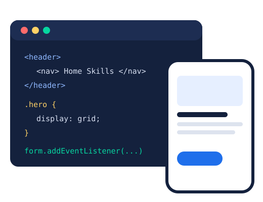

Web development
Hand-coding responsive, accessible websites with HTML, CSS and JavaScript, and turning business needs into features people actually use.
Business IT Student · University of Salford
I'm Ayaan, a second-year Business Information Technology student. I mix three years of front-line customer service with hands-on web development, so I build things that make sense for the people who actually use them.

I'm studying BSc (Hons) Business Information Technology at the University of Salford (2025 to 2028). My course sits right where business and technology meet: how organisations use systems, data and the web to solve real problems.
Before university I worked as a cashier, a waiter and in sales. Serving hundreds of customers a week taught me what good service looks like and how much a slow or confusing system costs a business. That is the lens I bring to every site I build.
Outside of my course I run small web projects for local businesses, from cold outreach to building and launching the site, and I'm building my own AI-assisted productivity system.
Hand-coding responsive, accessible websites with HTML, CSS and JavaScript, and turning business needs into features people actually use.
I'm interested in how systems are attacked and defended, and I want to build privacy and security into everything from the start, not bolt it on.
After graduating I want to move into a programming or cybersecurity role, keep building for real clients, and grow my own digital business.
Away from the screen: padel, the gym, football and gaming.